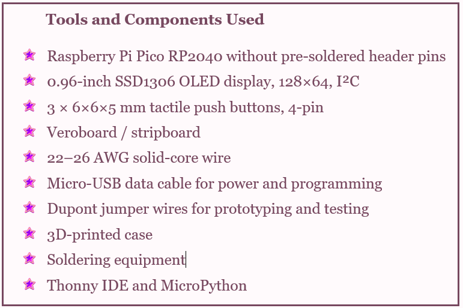
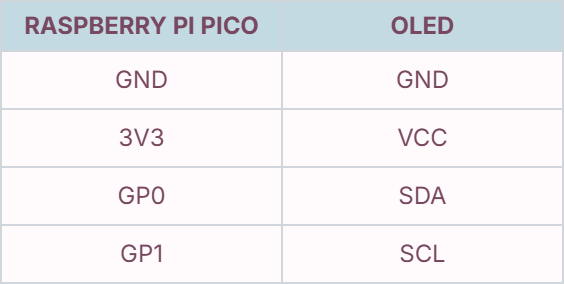
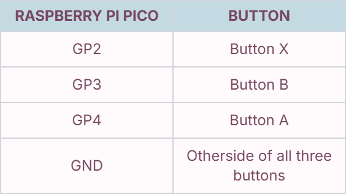

Tutorial

This is where I show you, step by step, how I built my own Tamagotchi.
Setup
This project is built around a Raspberry Pi Pico RP2040 running MicroPython. The Pico is connected to a 0.96-inch SSD1306 OLED display using I²C, along with three physical buttons used to control the Tamagotchi.
The components are mounted on veroboard and connected using short solid-core wires. Once everything has been soldered and tested, the electronics are placed inside a 3D-printed case.
The Pico is programmed using MicroPython through Thonny, and the project is based on Kevin McAleer's Pico-Tamachibi project. Before permanently soldering everything together, I tested the Pico, OLED display, and buttons individually to make sure each component worked correctly.

Wiring

The OLED uses I²C communication. SDA carries the data between the Pico and display, while SCL provides the clock signal.

Each button connects a GPIO pin to GND when pressed. The three buttons provide the main controls for interacting with the virtual pet.